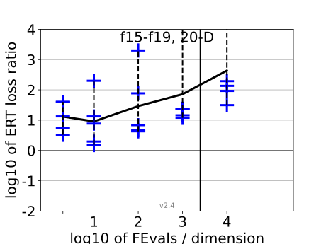
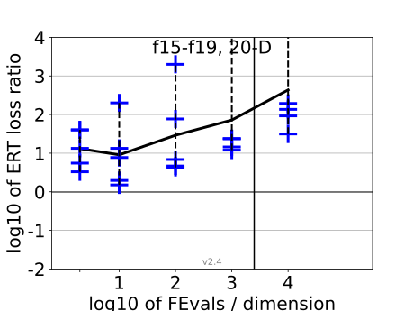

{kind=link}
{kind=link}
{kind=link}
{kind=link}
{kind=link}
{kind=link}
{kind=link}
{kind=link}
 
All functions in 5-D and 20-D
f1–f24 in 5-D, maxFE/D=10000
| #FEs/D | best | 10 % | 25 % | med | 75 % | 90 % |
|---|---|---|---|---|---|---|
| RLUS/D | 1e4 | 1e4 | 1e4 | 1e4 | 1e4 | 1e4 |
| 2 | 1.5 | 1.8 | 2.0 | 2.8 | 5.0 | 5.5 |
| 10 | 1.6 | 2.0 | 3.3 | 3.8 | 5.0 | 11 |
| 100 | 3.1 | 4.1 | 6.4 | 11 | 19 | 88 |
| 1e3 | 5.0 | 5.8 | 12 | 28 | 60 | 1.2e2 |
| 1e4 | 3.8 | 14 | 23 | 86 | 2.2e2 | 3.6e2 |
| 1e5 | 2.7 | 14 | 32 | 1.1e2 | 8.1e2 | 1.9e3 |
f1–f24 in 20-D, maxFE/D=2500
| #FEs/D | best | 10 % | 25 % | med | 75 % | 90 % |
|---|---|---|---|---|---|---|
| RLUS/D | 2e3 | 2e3 | 2e3 | 2e3 | 2e3 | 2e3 |
| 2 | 1.0 | 3.2 | 6.1 | 40 | 40 | 40 |
| 10 | 1.5 | 4.4 | 5.3 | 7.5 | 13 | 2.0e2 |
| 100 | 4.3 | 6.1 | 9.1 | 20 | 45 | 2.7e2 |
| 1e3 | 3.7 | 12 | 24 | 46 | 68 | 4.7e2 |
| 1e4 | 4.3 | 31 | 74 | 1.4e2 | 2.6e2 | 6.0e2 |
Separable functions in 5-D and 20-D
Misc. moderate functions in 5-D and 20-D
Ill-conditioned functions in 5-D and 20-D
Multi-modal functions in 5-D and 20-D
Weak structure functions in 5-D and 20-D
ERT loss ratios (see the previous figure for details). Each cross (+) represents a single function, the line is the geometric mean.{kind=link}
{kind=link}
{kind=link}